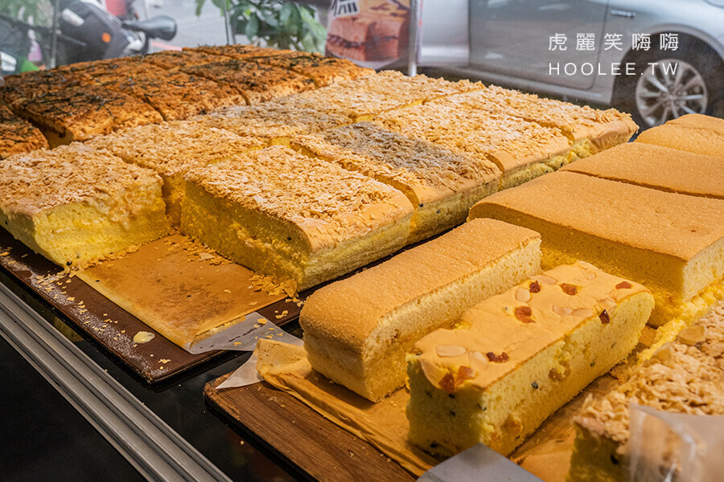

舒服蕾
九記食糖水
朵玫絲甜點森林
心得分享

外層抹上使用巴西里加上一顆顆歲蒜頭研磨製作的蒜香起司醬，經過炙燒提升香氣，吃起來鹹甜鹹甜的非常涮嘴。
百香果優格現烤蛋糕是招牌必吃口味！新鮮百香果汁製作的蛋糕軟綿酸甜，還能吃到卡滋卡滋的百香果籽。
超療癒的拔絲提拉米蘇變厚、變更濃郁了！日本低筋麵粉加上日本咖啡酒特製蛋糕體，搭配全新升級雙倍份量的提拉米蘇醬，吃起來更濃郁香醇，加上麻糬獨特的Q黏口感及充滿苦韻風味的可可粉，會讓人忍不住一口接一口。
首頁
舒服蕾
九記食糖水
心得分享